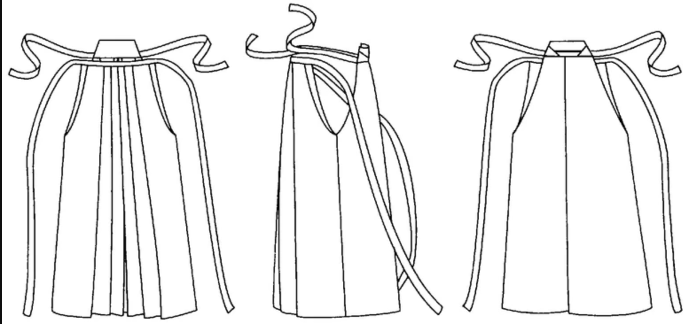
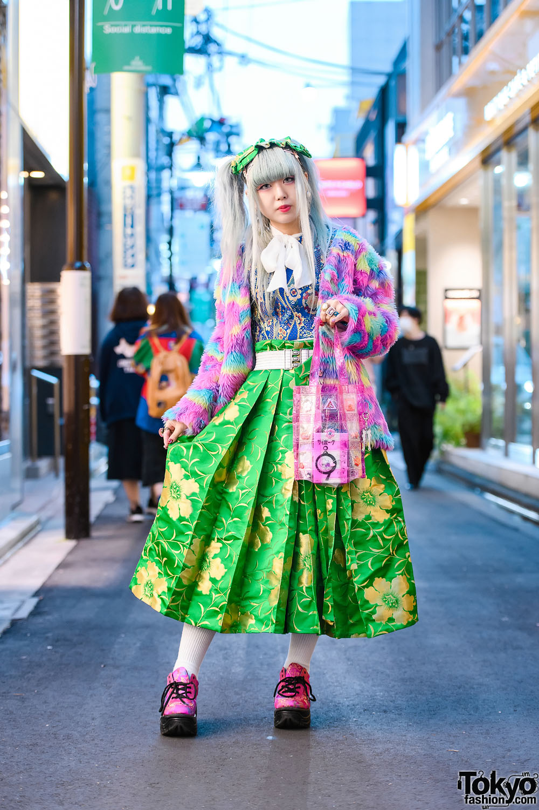
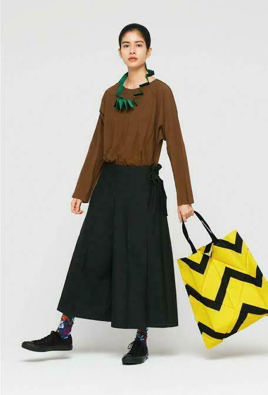
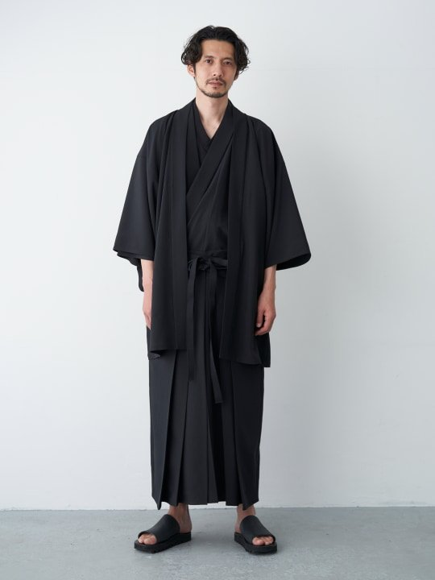
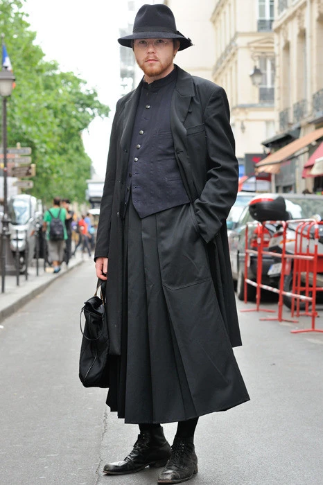
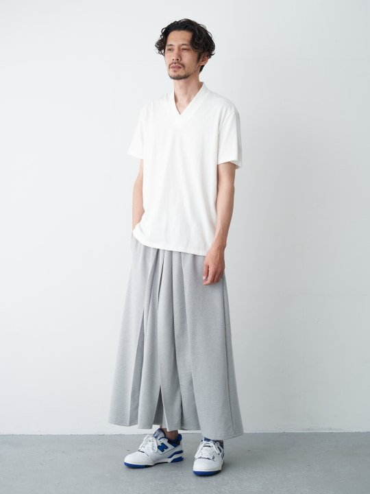
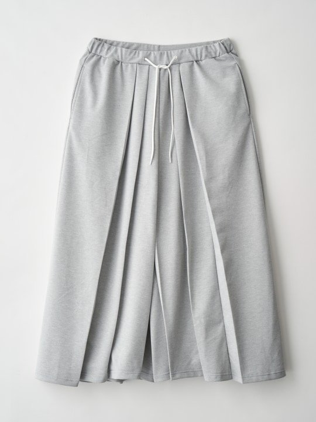
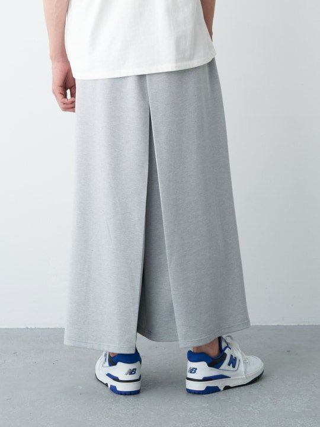
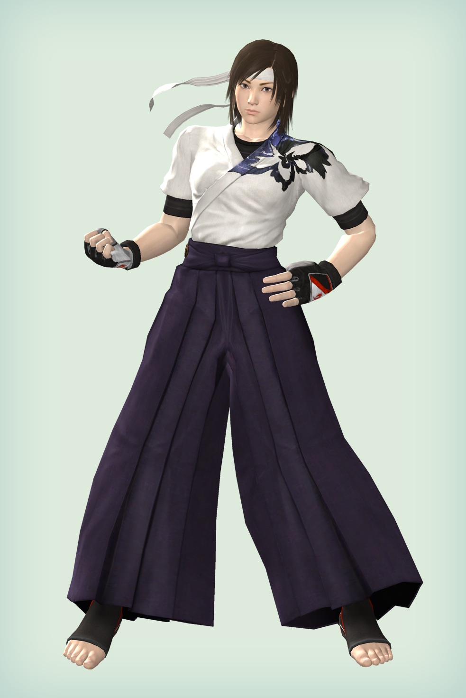
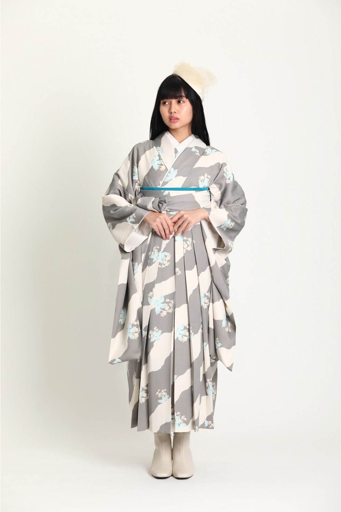

The hakama are men's pleated
trousers traditionally worn in Japan. The origins of the hakamaa stem in China, where the members of court in the Sui and Tang dynasties would don high-waisted, pleated pants. The hakama is meant to be worn over a kimono, and would be gifted to young boys to mark their coming of age.
Fabrication
Much like the kimono, the hakama is a very size-inclusive piece. It is secured by four straps on the waist, allowing the wearer to adjust it to their size. The pleats are also very precisely defined. The hakama has 7 deep pleats, 2 of which are in the back and 5 in front, making this also an asymmetrical piece. The hakama was originally made out of silk, but modern renditions have also produced them in cotton and jersey (see below).
2Day/Tmrw

Vintage Hakama, Fruits, Tokyo

Julia Sumire in Issey Miyake hakama

Trove men's cotton hakama

Yohji Yamamoto, SS2016

Trove grey jersey hakama

Trove grey jersey hakama

Trove grey jersey hakama

Asuka, Streetfighter

Watashino, Hakama by NADESHIKO


{kind=link}
{kind=link}
{kind=link}
{kind=link}
{kind=link}
{kind=link}
{kind=link}
{kind=link}
{kind=link}